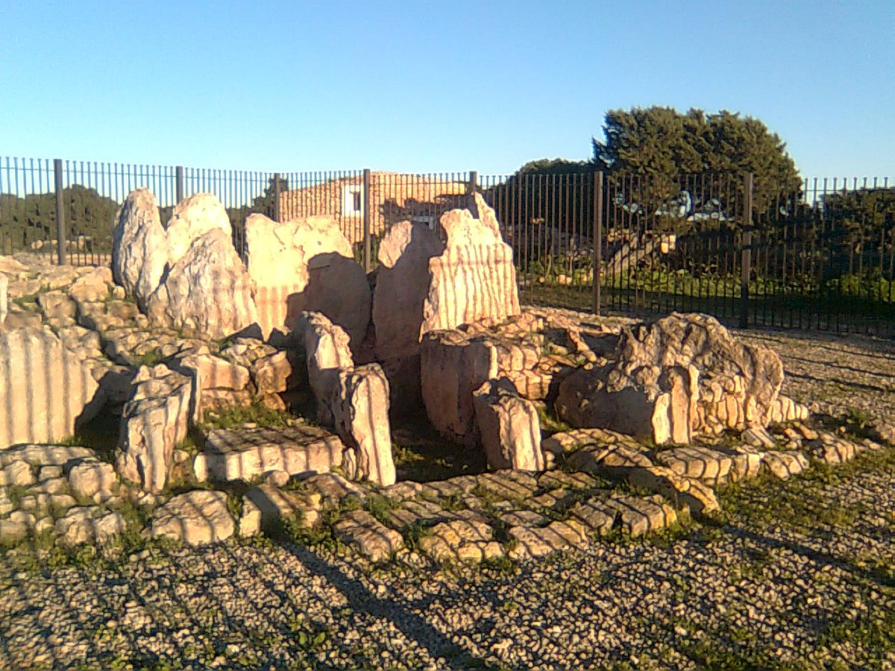

Yacimientos Arqueologicos de las Islas Baleares
Inicio
Mallorca
Menorca
Ibiza
Formentera
Quienes somos
Contactanos
Yacimientos de Formentera
Por epocas
Por tipo
Por municipio
Yacimientos de Formentera

Megalitico de ca na costra
Por epoca
De bronce
Megalitico de ca na costra
Por tipo
Monolito
Megalitico de ca na costra
Por municipio
Formentera
Megalitico de ca na costra